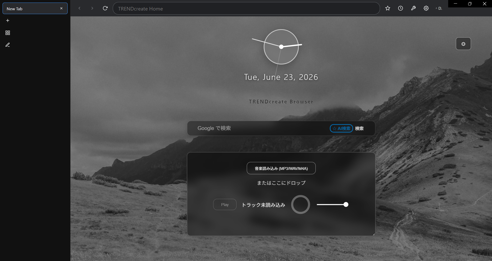
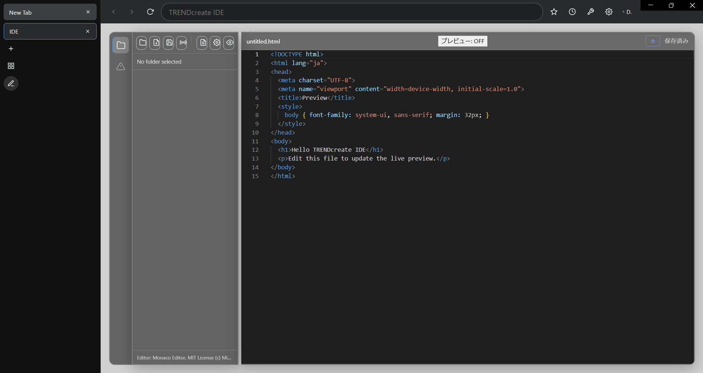

軽く、速く、創るための
ブラウザ。
TRENDcreate Browser は、Chrome 同等の機能性と軽快な動作を両立した、クリエイター向けデスクトップブラウザ。ブラウジングも執筆もコーディングも、ひとつの窓で。

Chrome 同等の機能性
日々の操作で「足りない」を感じさせない、本格ブラウザ機能を搭載。
ページ内検索
Ctrl+F で瞬時に検索バーを表示。一致件数の表示や前後移動に対応し、長いページでも目的の語へ一直線。
その場で翻訳
右クリックから「選択範囲を翻訳」「ページを翻訳」。海外サイトも読みたい言語へワンクリックで。
PDF をそのまま表示
Chromium 標準の PDF ビューアを内蔵。Web 上の PDF もダウンロードせず、Chrome と同じ感覚で閲覧。
プロファイル分離
用途ごとにログインや Cookie を完全分離。仕事用・個人用を切り替えても、互いのセッションが混ざりません。
内蔵 IDE
Monaco エディタ搭載のコードエディタとライブプレビュー。Web 制作をブラウザの中で完結。
執筆モード
縦書き対応のフォーカスモードや文字数カウントで、小説・記事の執筆もこの一台で。
ブラウザの中に、開発環境を。
Monaco エディタ搭載の内蔵 IDE とライブプレビューで、見ながら作れる。

機能はそのまま、もっと軽く。
重量級のエディタは「使う瞬間まで読み込まない」遅延ロード方式に。配布パッケージも必要なファイルだけに絞り込み、起動とインストールを高速化しました。
Android 版 開発中
スマホでも、軽く・速く・フル機能。GeckoView エンジンによる本格ブラウザを開発しています。
低速回線モード
回線が遅いときは画像・動画・フォントなど通信量の大きいリソースを自動で遮断し、HTML・CSS・スクリプトは維持。データ量を大幅に抑えつつ、ページの操作性はそのまま。OFF / 自動 / ON を切替可能。
本格ブラウザ機能
Mozilla の GeckoView エンジンを採用。複数タブ、用途別プロファイル(Cookie 分離)、ページ内検索など、デスクトップ版と同じ操作感をモバイルでも。
拡張機能に対応
GeckoView の WebExtension 対応により、実際のブラウザ拡張機能を導入可能。デスクトップ版を超える拡張性をモバイルで実現します。
※ Android 版は現在開発中です。リリース時期は GitHub でお知らせします。